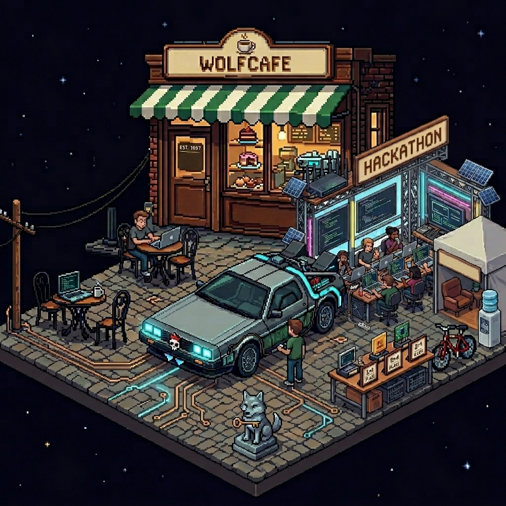
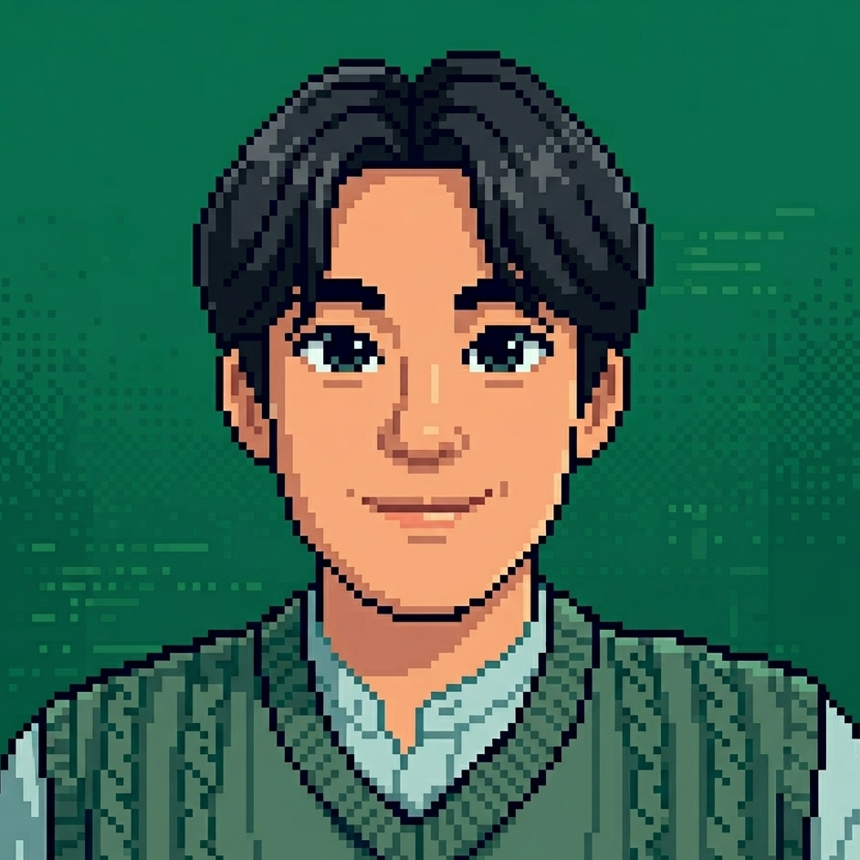
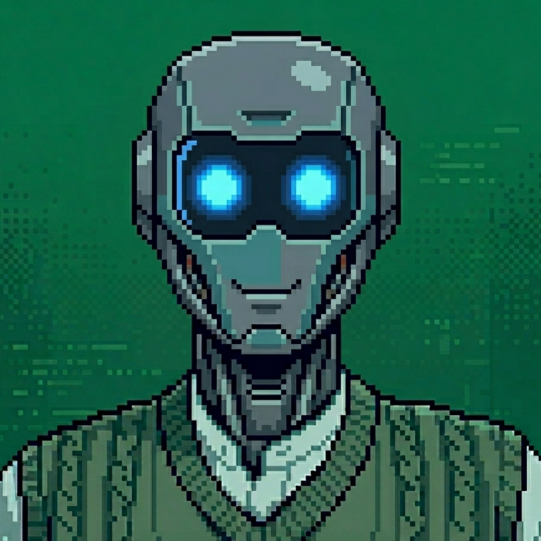

Computer Science graduate from NC State University (AI concentration). Building full-stack systems and exploring generative AI architectures — at the intersection of software and the physical world.
Joining LG Energy Solution as a Process Engineer in June — bringing software engineering rigor to the manufacturing floor.
I believe human curiosity drives the solutions AI provides — and I'm here to build systems that bridge that gap.
NC_STATE_UNIVERSITY
GLOBAL_ACCELERATOR
NAGOYA_UNIVERSITY
ROS-based autonomous vehicle with LiDAR lane-following and real-time OpenCV vision pipelines.
Biometric 1:N open-set identification using RootSIFT + global histogram fusion. AUC 0.95 across 500 identities.
Full-stack health platform built in 24 hours with 8+ REST APIs and Dockerized deployment.
Full-stack cafe management platform with real-time order processing and REST API integration.